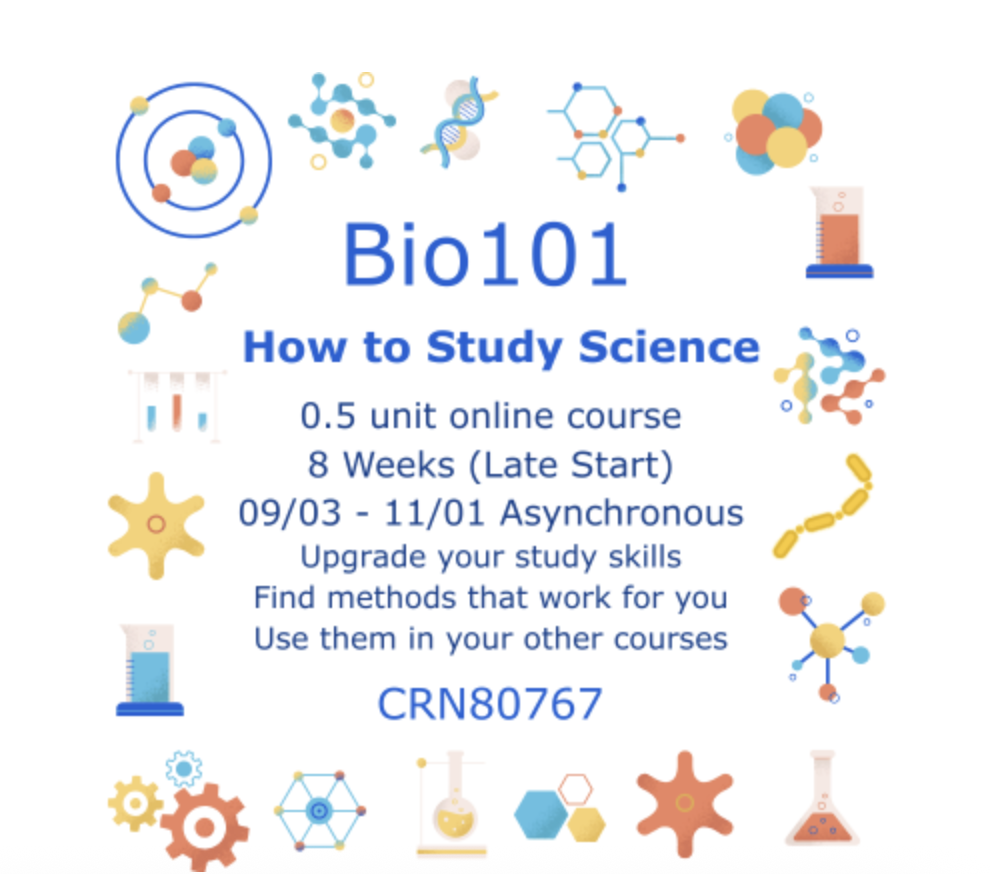

BIO 004 · Human Anatomy · Fall 2026
Solano is running a half unit course this fall called Bio101: How to Study Science, and I am adding it to the Scholar Points system. Complete it with a passing grade, a P or a letter grade of C or above, and it banks a one-time 20 verified hours toward your 36 Scholar Point hours. That is more than half the engagement track from one half unit class.

Bio101: How to Study Science · 0.5 unit · fully online and asynchronous · 8 weeks, late start · September 3 to November 1 · CRN 80767
It is exactly what it sounds like: a short course on how to study science so it actually sticks. The skills transfer straight into this class and every other science class you take after it. Half a unit, on your own schedule, done by the start of November.
Register through MySolano with CRN 80767, the same way you registered for this class. It is a late start course, so seats are open now, but the course begins September 3, so do not sit on it.
This is the easiest 20 hours in the whole system, and unlike every other kind, it pays you twice: once in points, and once in study skills you will use in every course after this one.